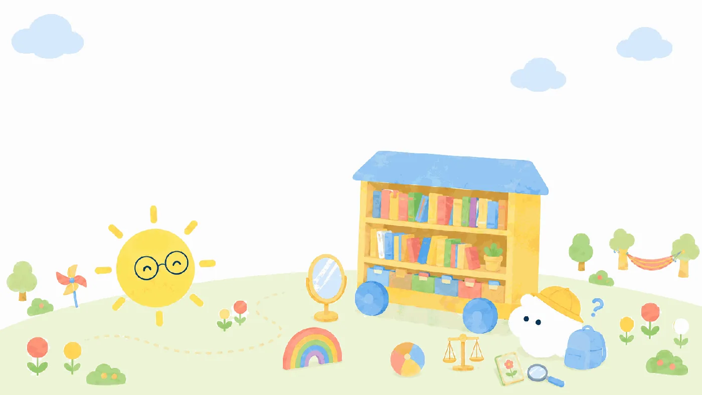

勉強の道 STEP2 ことばと理論キャリコン学科試験のよく出る用語
よく出る用語、ぜんぶ
全162語の中から、過去6回の学科試験で3回以上出た「よく出る」47語だけを集めました。時間がない日は、まずこのページから。
- さがす分野・ことばでしぼる
- よむひとことで意味をつかむ
- たしかめる1問1答の「よく出るだけ」

47 語を表示中
キャリア理論9語
- キャリア・アンカー過去6回で3回働くうえで
「これだけは 手放せない」と いう 自分の 軸 - キャリア構築理論過去6回で3回キャリアは
「ある」 ものではなく、 自分の 物語と して 「つくる」ものだと いう 理論 - 自己概念過去6回で4回「自分は
こんな 人」と 自分 自身に ついて 持っている イメージ - 自己効力感過去6回で4回「自分なら
これを うまく やれそうだ」と いう 見通しと 自信 - 職業的発達段階(スーパーの
ライフステージ)過去6回で4回スーパーが 唱えた、 人の 職業人生が たどる 5つの 段階(成長→探索→確立→維持→解放) - 転機(トランジション)過去6回で6回人生の
天気が 変わる 節目の こと。 4つの S(状況・自分・ 支え・戦略)で 点検して 乗り切る - 動機づけ・衛生理論(ハーズバーグ)過去6回で3回仕事の
「満足」と 「不満足」は 別々の 原因から 生まれる、と いう 二要因理論 - 発達課題(ハヴィガースト)過去6回で4回人生の
各時期に 取り組むべき 「宿題」が あると いう 考え方を 最初に 広めた 人の 理論 - プロティアン・キャリア過去6回で4回会社ではなく
自分が キャリアの 主人公で、 変幻自在に 形を 変えていくと いう ホールの 考え方
カウンセリング技法6語
- グループアプローチ過去6回で4回1対1ではなく、
グループの 力を 使って 気づきや 成長を 促す支援方法 - システマティック・アプローチ過去6回で3回相談を
「関係づくり→問題把握→目標設定→方策実行→評価」と 順序立てて 進める 枠組み - スーパービジョン過去6回で5回経験豊かな
指導者(スーパーバイザー)から、 自分の 面談に ついて 指導を 受けて 成長する こと - 相談過程の
管理(ケースの 記録・連携・終結)過去6回で3回相談全体を 見わたして、 記録・目標管理・他機関連携・ 終わり方までを 整える 技能 - フォローアップ(適応支援)過去6回で5回就職・
異動の あとも 様子を 確認し、 新しい 環境への 適応を 支える 支援 - マイクロカウンセリング過去6回で5回カウンセリングの
技を 小さな 部品に 分けて、 積み木のように 学ぶ方法。 土台は 「かかわり 行動」
カウンセリング理論4語
制度・支援28語
- インターンシップ(三省合意の
見直し)過去6回で5回学生の 就業体験の ルール。 一定の 条件を 満たせば、 企業は 得た 学生情報を 採用に 使える - 完全失業率と
有効求人倍率過去6回で5回働く 世界の 「体温計」と なる 2大統計。 定義と 出どころ (どの 調査か)が テストに 出る - 技能検定過去6回で3回働く
人の 技能を 国が 検定して 証明する 制度。 合格すると 「技能士」を 名乗れる - キャリア教育と
キャリア・パスポート過去6回で6回子どもの ころから 「生き方・ 働き方」を 学ぶ教育と、 小中高を 通じて 記録する ファイル - キャリアコンサルタントの
倫理と 義務過去6回で4回守秘義務・信用失墜行為の 禁止など、 資格者が 必ず 守るべきルール - 教育訓練給付制度過去6回で4回働く
人の 学び直しの 受講料の 一部を、 雇用保険から 支援してくれる 制度 - 公共職業訓練(ハロートレーニング)過去6回で3回国や
都道府県が 用意している、 仕事の スキルを 学ぶための 公的な 職業訓練 - 雇用保険制度過去6回で3回失業した
ときや 育休中などに、 生活と スキルアップを 支える 国の 保険 - 職業情報提供サイト(job tag)と
職業理解過去6回で6回約500の 職業を 「見える 化」した、 国の 無料お仕事データベース - 職業能力開発基本計画過去6回で3回国の
「人材育成を こう 進めます」と いう 5年ごとの 基本方針 - 職業能力評価基準過去6回で3回「この
仕事には、 どんな 能力が 必要か」を 業種・職種ごとに 国が 整理した ものさし - ジョブ・カード過去6回で6回自分の
キャリアを 整理して 記録する、 国の 様式の 「キャリアの 母子手帳」のような ツール - 人材開発支援助成金・キャリアアップ助成金過去6回で4回社員の
訓練や 非正規から 正社員への 転換を がんばる 会社に、 国が お金で 応援する 制度 - ストレスチェック制度過去6回で3回従業員50人以上の
職場で 年1回義務づけられる、 心の 健康診断 - セルフ・キャリアドック過去6回で5回会社が
従業員に 定期的な キャリアコンサルティング等を 行う 「キャリアの 健康診断」のような 仕組み - 男女雇用機会均等法過去6回で3回採用や
昇進で 性別に よって 差別する ことを 禁じ、 ハラスメント対策を 義務づける 法律 - 治療と
仕事の 両立支援過去6回で3回がんなどの 病気に なっても、 治療しながら 働き続けられるように 職場で 支える 取り組み - トライアル雇用・インターンシップ過去6回で5回「お試し期間」で
仕事と 職場を 体験してから、 本採用へ 進むしく み - 能力開発基本調査過去6回で5回会社の
人材育成や 働く 人の 自己啓発の 実態が わかる 厚生労働省の 調査 - パートタイム・有期雇用労働法(同一労働同一賃金)過去6回で3回パートや
契約社員と 正社員の、 不合理な 待遇差を 禁止する 法律 - 発達障害の
理解と 支援過去6回で5回ASD・ADHD・LDなど 生まれつきの 脳の 特性。 「苦手」と 「強み」の 両面から 支援を 考える - ハローワーク(公共職業安定所)過去6回で6回仕事探し・雇用保険・職業訓練の
相談が 無料で できる 国の 窓口 - 副業・兼業ガイドライン過去6回で3回「副業は
原則認める 方向で」と いう 国の 指針。 労働時間の 通算ルールが ポイント - リカレント教育と
リスキリング過去6回で4回大人に なってからの 「学び直し」の 2つの キーワード。 似ているが 力点が 違う - 労働安全衛生法過去6回で3回働く
人のけが・病気を 防ぎ、 健康を 守る ための ルールを 定めた 法律 - 労働基準法過去6回で6回労働時間や
休日など、 働く ルールの 「最低ライン」を 決めた 法律 - 労働経済の
分析(労働経済白書)過去6回で6回厚生労働省が 毎年出す、 「働く 人の 今」を まとめた 分析レポート - 労働力調査過去6回で3回完全失
業率が わかる、 総務省が 毎月 行う 調査
「過去6回で◯回」は、過去6回の学科試験で実際に出てきた回数です。「よく出る」は3回以上、「ときどき出る」は1〜2回、「おさえて安心」は0回です。

サニー先生試験勉強は
モヤン全部は

試験の道具
ほかの道具も、いつでもここから
したいことで、4つの棚に分けました。


まだ養成講習を受けていない方へ：相談の実務経験がない場合、受験には養成講習の修了が必要です。独学で取れる？受験資格の3ルート